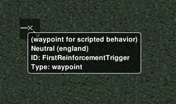
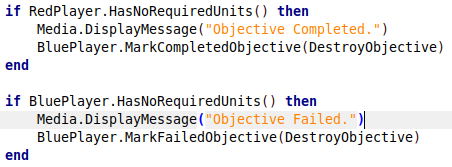
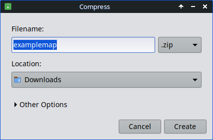

Making an OpenRA Script
In this section, we're go through the process of making an OpenRA mission script from start to finish. It's recommended that you go through the entire previous section first before starting this one, just so that you have a rough idea of how everything works. We're going to use a map that's already been set up for scripting, with players and actors already defined and all the map rules in place. For this, I've created a ZIP file containing an example map that you can follow along with and use as you please. You can download it here. This is an RA map, so make sure you place it under maps/ra when you're ready to playtest the map.
Chapters:
- Our Plan
- Laying Out The Mission
- Creating Player Taskforces
- Creating Enemy Taskforces
- Mission Dialogue
- Finishing Touches
- Packing It Up
Our Plan
First, we need to figure out what we want our map to do, and thus coming up with a plan will really help. We'll start by opening up the map folder and see what we're dealing with.
Open up the ZIP file in your file explorer and you should see the following:

The Lua script will be our primary focus during this part of the tutorial, but we should also look at the two YAML files. We'll be referring back to these often when making our script, especially the map file.
Extract the archive to a spot on your hard drive and then open the map file. You should see a bunch of things it:

THe stuff at the top is map information. You're free to put your name (or username) in the Author spot, but the rest should stay unmodified (since all if it is being read by the mod and modifications could result in the game crashing).
The spot below is what we should look at next. These are the defined players on the map (be they computer-controlled, human-controlled, or neither). I've highlighted the two that were added to the map for scripting purposes:

Let's talk about both of them.
- BluePlayer: This is the human-controlled player. The
AllowBotsandPlayableattributes define if the player can be controlled by the bots (in this case, no) and whether this is a human-controlled player (in this case, yes). Its faction is Allies with the subfaction England, it has no allies and its enemy is RedPlayer. - RedPlayer: This is our computer opponent. We've set to use OpenRA's
campaignbut, but if you want the computer opponent to act like a skirmish AI, you can also set it to anormalbot by replacing it in the Attributes section. Its faction is Soviets with the subfaction Russia, it has no allies and its enemy is BluePlayer.
Now for the fun one: go ahead and open up the map in OpenRA by placing it in the map folder we talked about previously. Fire up OpenRA, navigate to Extras -> Map Editor -> Load Map, select the example map, then click Load. You should come to the map editor screen:

This is the map we have to work with. As you can see, it is pretty simple. We have a player on each side, with the human player on the bottom right and the red player on the top left, and the other two corners taken up by villages with waypoints that represent scripted events and markers. We'll get back to that last one later, but for now let's look at one of these actors.
Each actor has specific properties associated with them. Specifically each actor has a name, owner, location, and type, all of which are displayed both in the YAML file as well as in the map editor:
Actors are essential to the functionality to the map. This small(ish) map only has about 70 or so actors, but some maps (especially larger and more complicated ones) will likely have more than 200, 500, or in rare cases even 1000 actors, each of which play their role through custom rules and game scripts. Get ready for a ride when you get into more complicated maps as it can be a tedious process placing all of those actors...
Back to the YAML file, the only other thing to note is the rules section at the bottom. This is usually just one line of code linline to a separate ruels file (as seen here) or a set of rules plopped in at the bottom of the map to change specific OpenRA rules.
If we take a look at the rules file included in our map, there we can see that the only rule we have in place is a link to the map script we're using. This is nothing too special, but you can also define your own rules to omit or include units, chimotange the amount of starting money, whether or not random crates spawn, among other things. That RA camapign rules file that's listed before our rules file goes more in-depth, so you can check that out by going to the OpenRA Github or your own OpenRA installation and going to mods -> ra -> rules and clicking on campaign-rules.yaml. If you're on Linux, you're better off using the Github since the AppImage is kind of not intended to be pried into...
So, how does all this relate to the plan we're making? Well, first we need to lay out what we want to happen - who we want to win, what we want to happen on a given part of the map, and if there's any preconditions we want to address. In this case, we already know just by looking at the map that:
- We have two players - one human-controlled and one computer-controlled.
- The human player has to build up their base while the computer has a base already set up.
- There are two villages at the corners that have waypoints for scripted events.
Thus, the plan should probably be that we want to make a map where the human player must eliminate the computer player and, either as an added bonus or a requirement, go to the village to receive reinforcements. It's not that complex, but it should fit all of the criteria that we want out map to fulfill. For larger maps with covert-like stealth or the like, you'd want to have a larger set of criteria and a plan that fits all of those criteria, especially with computer-controlled units that are on patrol.
Great, we have a plan! Let's start writing our script!
Laying Out the Mission
Let's finally open up that mission script and see what we have to work with:
As you can see, we're starting with pretty much a clean slate. Only WorldLoaded and Tick have been added for us, which is expected since they're the backbone of any program. Let's start by adding in those players we saw from before, like this:

We should also make our objectives while we're here. According to our plan, the end goal is for the human player to defeat the enemy computer, so we assign a promary objective to the player that tells them to destroy their computer opponent. For that we're going to use AddPrimaryObjective:
We should also add some functions that we will use to spawn reinforcements in the future. This will come more into play in the net chapter.
Finally for this section, we're going to need to mark the objective as completed when the player has done their task. Remember that to mark an objective as complete, we can use the MarkCompletedObjective function after specifying a player. We can add this to the Tick section so that it checks this condition every frame, and since out condition is thal all of Red's forces need to be eliminated, we can use the HasNoRequiredUnits function to specify that. When all is set and done, the Tick part should look like this:

Alternatively, we should mark the objective as Failed if the blue player loses all their units and buildings. We can place this underneath the previous command we gave and swap the MarkCompletedObjective function for the MarkFailedObjective function. That way, it will fail theb player if they lose all their stuff instead of the enemy. Once done, your code should look like this:

Congratulations! Our map is now functional! Fell free to jump back into the game and test it out. Try taking out the red player out and see what happens, and then try being an idiot and getting taken out yourself and see what happens. If you catch any errors, make sure to iron them out before contiunuing, because we'll bne adding more to it as we move forward, and having a functional map throughout is the most important thing for this tutorial, so remember to playtest often.
Alright, time to get more involved! Let's talk about player taskforces and reinforcements!
Creating Player Taskforces
Let's revisit one of those functions we created earlier, specifically the one for the Blue Player Reinforcements. For this map, we'll want to give the player some reinforcements when they enter the two villages at the top-right and bottom-left of the map, so let's add those in now.
First, let's go back into the map editor and see what units we want to use. Go to the Actors tab and hover over a unit to see its type.


The Light Tank and Medium Tank in Red Alert are Allied units. These should work for what we need. Make a note of their type, as we will be using these in out script. We can also used the Ranger (also an Allied unit) if we want some anti-personnel vehiclews in our reinforcement:
Let's create our list of vehicles as a separate variable for easier access. Add a list to your function that will list out all the vehicles that will be in the taskforce, like this:

Each entry in the list counts as a unit, so don't be afraid to add multiple of the same unit type to get a larger taskforce. In fact, this list is fairly tame for a taskforce... most maps can have a list of up to 20 units in one taskforce, depending on the situation.
Now we need to be able to spawn the taskforce in. For this, we'll be using triggers and, specifically, the OnEnteredProximityTrigger trigger type. On our map, there are waypoints that indicate an area where, if the player enters it, the trigger should fire.
We can use the name of this waypoint (FirstReinforcementTrigger) in our script without having to define it (because it's already defined as a global by the game). Let's go ahead and start making our trigger. Remember that we need to use WDist to define the trigger's firing radius and that we should delete the trigger at the end to avoid any memory problems. We'll need the CenterPosition of our waypoint and will be using both the actor and the trigger ID in our callback function. The end result should look like this:
So how do we spawn the taskforce in? Simple! We can use Reinforcements.Reinforce that we talked about before. We'll add a line that spawns a reinforcements taskforce in whose Player is the Blue Player, the taskforce is the one we created, and the entry path has two waypoints (you might have noticed them in the map editor already) called ReinforceOneSpawnOne and ReinforceOneDest (you can also use ReinforceOneSpawnTwo as the spawn location if you want). The order in which these things are added looks like this:
Reinforcements.Reinforce([player], [taskforce], {[spawnLocation], [...], {destLocation}})
So, let's go ahead and add this line, replacing the things in brackets with what we have at our disposal. It should look like this when we're finished:
Great! Now we can rinse and repeat for the other side of the map. You can copy and paste the same trigger we just implemented right underneath the original, and then replace all the 1's with 2's and the first's with seconds. It should look like this:
All finished, right? Well, if you were a keen eye you'd notice something's off about these triggers. These are going to activate if any unit moves within its radius, but we only want it to happen when the blue units step into the radius. This is why we needed that a from before, as this will go into an if statement that will check to see if the unit that stepped into the radius belongs to the player. Go ahead and reimplement those two lines inside the trigger only this time with the conditional a.IsLocalPlayer. It should look like this when finished:
Then do the same for the second trigger:
Now we're finished. Go ahead and add the function into WorldLoaded so that it loads up when the map does:
Save your changes here and then go back and test the map out. With any luck the tas forces you just implemented shopuld spawn as soon as you enter the villages from the player side of the map. If they don't (or if they spawn too soon) adjust the WDist number in the proximity trigger, or if the function doesn't work, go back and check the script for errors. After that, we're good to move on to the next part of this tutorial.
Creating Enemy Taskforces
Now for the less fun part: making the enemy produce its own units. As long as a bot has a factory available that can produce the necessary units and the necessary cash, it will produce the units from the factory and give them whatever orders we tell them to in the script (at least in our case, where we're using single-queue production). This is our first time dabbling with production queues, so let's take this one step at a time.
First, let's figure out what we want our bot to produce. We'll want both an infantry taskforce and a vehicle taskforce, so the bot can produce from both the barracks and war factory. Let's look at our options in the map editor:
These are what we're looking for. We have standard rifle infantry (denoted as the type e1) and rocket soldiers (as type e3). We could also do grenadiers (which is e2) but for now we'll stick with those two.
And these are our vehicles. The Soviets get different tanks from the allies, with the Heavy Tank being denoted as 2tnk and the Mobile Flak Cannon as ftnk. These will be for our vehicle taskforce while the two soldiers will go in our infantry taskforce.
Let's go to our MakeRedUnits function and create those taskforces:
Now we need to get our red player to make those taskforces. A few advanced programming techniques are rquired for this part, so let's go through it together. Step one is to make sure the player still has the right factory. Let's go back to the map editor and see what the names of those factories are:
Here we go. It looks like the barracks is Actor54 and the war factory is Actor46. If either none of these actors is destroyed, then the player won't be able to produce a specific type of unit. Let's check for that using IsDead inside of an if statement:
Notice that we're checking to see if the actor is not destroyed rather than the opposite. That's because we need the code to run only if we have production capabilities, so if the actor is destroyed, we need our code to ignore the production part. This is the most efficient way to do it, but there are other ways as well.
Now we can actually tell the bot to produce some actors. Inside the if statement, add a Build command that will produce some units for us:
Now we need to define a function to tell the units what to do after they're produced. This gets into something I'll talk baout more in Advanced Tips and Tricks, but I'll show you what to put down for your first script:
All we're really doing is telling each unit to attack the nearest enemy, and they'll likely keep doing it after we tell them to since it's the only order they've been given. We'll talk more about Utils.Do when we get to the next chapter.
One last thing: We want the bot to keep producting units once every little while. Let's add a timer that will jump to the start of the function once it expires. We'll use Trigger.AfterDelay for this, with the delay being one and a half minutes:
That should be everything! Add the function to WorldLoaded in the same way as the MakeBlueUnits function, then save and test your map. If you find that the enemy is coming too early, you can also set up a delay in WorldLoaded before the red player starts producing units. You could also shorten the time between when the red player producesd units or add other units to the taskforces, although keep in mind that adding units that the player can't produce to the taskforces could cause the script to get messed up or the taskforce to just not be built. There are hierarchy trees online that you can look up if you don't know what units can be built by what sides.
We're almost done! One last section to go before we add the finishing touches.
Mission Dialogue
Now we want to add a little more personality to our map, and the best way of doing that is adding some dialogue to tell the player what to do, when reinforcements arrive, and so on. This is where we get into the Media library at long last.
Let's jump back to the start of the script and a line just below the AddPrimaryObjective line. Here we'll tell the player what they need to do:
We should also add some to let the playuer know that reinforcements have arrived:
And finally, we should add some to the Tick function to tell the playuer when they've completed (or failed) the objective:
That was easy! Now when you load up and test your map, you should get dialogue for when the player wins, loses, when the reinforcements arrive, and at the start of the mission. Dialogue isn't strictly necessary, but great to expand the story of a campaign, provide tips for the player, lay out map objectives, among other things. If you want to make a good map, get used to using Media.DisplayMessage a lot.
Finishing Touches
Alright, we're on the last stretch! Let's do a little bit of code cleanup and general maintenance before we're done. This will usually help in the long term when we publish our map.
First, remember that function we made for the red taskforces so that they could do stuff on their own? Doesn't it annoy you that they're just the same function copy-pasted from one another? Well, there's a way to address that. We'll make a single function just after WorldLoaded that takes in an array of units and assigns the Hunt command to each unit. It should look like this:
Now we can take all that messy code and replace it with the function we just created. Remember to not include the usual parentheses as it can mess up out map pretty quick (I've been burned by that more than once...)
Ah, much better! This UnitHunt function is universally useful for thing like shellmaps (like the one for RA), singleplayer mission maps, and other things. Feel free to copy it and use it with every map you make.
One other thing we can do is add comments. In Lua, this is done with a couple dashes (--) or you can do a multi-line comment with some brackets aded to it Z(--[[ {add stuff here} ]]--). Let's do that and add our name and the name of the map to the top of the file:
You can also add your own comments describing what your code does, like for a specific function, but we're not going to go into that here.
Packing It Up
Congratulations! You've just finished your very first OpenRA Lua script! Now it's time to get it out into the world. There are a lot of ways to do this, but we're going to go into repacking the completed script along with the other files into a Zip file to make it easy to move around.
You'll first want to make sure that the original archive is deleted or that you rename the folder you were working in as that's the one we'll be packing up. Then as long as you have an application for creating Zip files, you can right-click on the folder you were working in and click "Create Archive" which should lead you to this screen:
If you have 7-Zip, you can add it to an archive with some more advanced features built-in (though I tend to not mess with them):

Your map is ready to be shared! Once you've got it packed up, you can districute it in a number of different ways. My personal favorites are to send it through Discord or Github, but OpenRA also has a dedicated map-sharing site called the OpenRA Resource Center, which allows you to filter maps for a specific game (like RA, TD, and D2K). Each of these require an account for you to use, but all of them are great options.
You can also use a USB drive or even a CD if you want something physical. The small file size makes it easy to share pretty much everywhere.
At this point, the tutorial is pretty much done. However, I am going to go into more detail into specific OpenRA scripting techniques (such as more advanced AI, scripted events, useful features, etc), so if you want to get better at mission-making feel free to continue on to the last section and see what makes scripting in OpenRA that much morte special compared to the games they were based on. And of course, happy scripting!